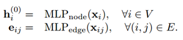
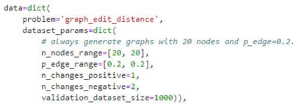

Graph Matching Networks for Learning the Similarity of Graph Structured Objects
摘 要： 本文复现了DeepMind于2019年发表在PRML会议上的Graph Matching Networks for Learning the Similarity of Graph Structured Objects一文，该论文解决了图结构对象的检索和匹配这一具有挑战性的问题，并做出了两个关键贡献。首先，论文演示如何训练图神经网络（GNN），它已成为针对结构化数据定义的各种监督预测问题的有效模型，可以训练它们在向量空间中嵌入图数据从而实现有效的相似性推理。其次，论文提出了一种新颖的图匹配网络模型，该模型在给定一对图作为输入的情况下，通过共同推理来计算它们之间的相似度得分。通过基于注意力机制的新跨图匹配机制进行配对，论文展示了其模型在不同领域的有效性，包括基于控制流图的功能相似性搜索这一具有挑战性的问题，该问题在检测软件系统中的漏洞中起着重要作用。实验分析表明，改论文所提出的图匹配模型不仅可以在相似性学习的背景下利用结构，而且还可以胜过为解决这些问题而精心设计的特定领域基准系统。
关键词：图神经网络；相似性计算；图嵌入；深度学习
Research on TikTok Competitiveness Based on Fuzzy Multi-level Evaluation Method
Abstract: This article reproduces the article Graph Matching Networks for Learning the Similarity of Graph Structured Objects published by DeepMind at the PRML conference in 2019. This paper solves the challenging problem of retrieval and matching of graph structure objects, and makes Two key contributions. First, the paper demonstrates how to train graph neural network (GNN), which has become an effective model for various supervised prediction problems defined by structured data. They can be trained to embed graph data in vector space to achieve effective similarity inference. Secondly, the paper proposes a novel graph matching network model, which, given a pair of graphs as input, calculates the similarity score between them through common inference. Through the new cross-graph matching mechanism based on the attention mechanism for pairing, the paper demonstrated the effectiveness of its model in different fields, including the challenging problem of functional similarity search based on control flow graphs, which is in the detection of software systems Plays an important role in the loopholes in the. Experimental analysis shows that the graph matching model proposed in this paper can not only use the structure in the context of similarity learning, but also can outperform the domain-specific benchmark system carefully designed to solve these problems.
Key words: Graph neural network; similarity calculation; graph embedding; deep learning
1 引言
现实的人类世界正如同一个整体的复杂系统，系统中无时不存在着人与人、组织与组织之间的联系与交互，而图网络的表示形式自然的契合了现实世界的此类特点，图网络中的节点及节点的属性表示真实世界的实体和实体的属性标签，节点间的连边表示了实体间的客观联系与交互，因此，利用图网络来研究和表示真实世界中的系统性问题具有合理性及可行性。图是用于编码在许多领域中遇到的关系结构的自然表示。Gilmer等人曾于2017计算在图结构化数据上定义的定义广泛用于从计算生物学和化学分子分析到知识图或图结构化解析的各种领域了解自然语言。
在过去的几年中，图神经网络（GNN）已经成为一类有效的模型，用于学习结构化数据的表示形式和解决图上的各种监督预测问题。这样的模型通过设计并通过迭代聚合局部结构信息的传播过程来计算图节点表示形式，从而不变于图元素的排列（Scarselli等，2009; Li等，2015; Gilmer等，2017）。这些节点表示然后直接用于节点分类，或合并到图形向量中进行图形分类，监督分类或回归之外的问题对于GNN的研究相对较少。DeppMind所发表的此篇论文研究了图结构化对象的相似性学习问题，这种问题出现在许多重要的现实应用中，尤其是在图数据库中基于相似性的检索中。一个有启发性的应用是二进制功能相似性搜索的计算机安全问题，其中给定一个二进制文件，该二进制文件可能包含或可能不包含具有已知漏洞的代码，我们希望检查该二进制文件中的任何控制流图是否都与该数据库的相似性足够。这有助于确定封闭源软件中易受攻击的静态链接库，这是一个经常发生的问题（CVE，2010；2018），目前尚无良好的解决方案。这种相似性学习问题极具挑战性，因为细微的差异会使两个图在语义上非常不同，而具有不同结构的图仍可能相似。因此，针对此问题的成功模型应该（1）利用图结构，并且（2）能够从图结构以及学习的语义中推断出图的相似性。
为了解决上述两个研究问题，改论文提出了两种解决方法，其一为利用GNNs模型解决图的嵌入问题，为了解决图的相似性学习问题，作者研究了GNNs在这种情况下的使用，探索它们如何被用来将图嵌入到向量空间中，并学习这种嵌入模型来使相似的图在向量空间中接近，而不相似的图远离。该模型的一个重要特性是，它将每个图独立地映射到一个嵌入向量，然后所有的相似度计算都在向量空间中进行。这种方法的好处是如果需要对数据库中大量的图进行比较的时候，只需要对数据库中图的这些embedding进行比较，可以利用已有的一些算法快速得到匹配，比如k-d trees、locality sensitive hashing。另外论文针对跨图间的相似性计算问题提出了GMN模型，该模型可作为对GNN模型的一种扩展模型，我们将其称为图匹配网络（GMN）以进行相似性学习。GMN通过跨图关注机制来计算跨图的节点并识别差异，而不是为每个图独立地计算图表示。
因此，基于以上介绍该论文的主要贡献有三点：（1）证明了GNNs可以用来生成图嵌入，用于图相似度学习；（2）提出了图匹配网络（Graph Matching Networks），可以通过交叉图注意力匹配来进行计算相似度；（3）实验表明相似度学习模型可以在一系列应用上实现好的性能。
2 模型
本文提出了Graph Embedding Model和Graph Matching Network两个模型，分别如下图左边和右边。
图 1 图嵌入图（左）和匹配模型图（右）
2.1 Graph Embedding Model
图嵌入模型主要基于GNN来提取图上的信息，然后通过若干轮，在图上相邻节点之间交换信息，然后再把所有节点上的信息聚合产生关于这个图的整体embedding。分为三步Encoder、Propagation Layers和Aggregator。其主要思路是用传统GNN把全图表征成一个向量，然后利用图的向量来计算图与图之间的相似性，模型由：编码层、传播层、聚合层构成。
（1）Encoder
对图上每一个节点和每一条边的特征进行编码，如果节点或者边没有更多额外能利用的信息的话，它们的原始特征可以设置为常数1，即Xi= 1 , Xij = 1 。其中Xi、Xij分别代表节点和边的特征，相应的MLP编码器就是简单的一个隐含层的神经网络。

（2）Propagation Layers
第二步是在图上进行多轮的信息传播。每轮中，每条连边都通过一个神经网络生成一个message，每个节点都接受来自相邻节点的message并且形成新的节点表示。将相邻节点信息汇聚到中间节点可以使用均值、最大值和注意力等方法。
（3）Aggregator
第三步是把得到的节点表示都聚合起来，形成关于整个图的embedding。转换节点表示，然后使用带有门控向量的加权和在节点之间进行聚合。加权和可以帮助过滤掉不相关的信息，它比简单的和功能更强大，在经验上也有显著的提高。
2.2 Graph Matching Network
该模型在第一步和第三步都和前一种模型相同，最主要的区别是第二步在message passing的过程
中会在两个图之间传递信息，每个节点都会去尽量匹配另一个图中的相似节点，并且产生图之间的信息传递。图匹配网络将一对图作为输入并计算它们之间的相似度得分。与嵌入模型相比，这些匹配模型在该对上共同计算相似性得分，而不是先将每个图独立映射到向量。因此，这些模型可能比嵌入模型更强大，但代价是一些额外的计算效率。
论文提出了以下图匹配网络，该图更改了每个传播层中的节点更新模块，不仅像以前一样考虑了每个图边缘上的聚合消息，而且还考虑了一个跨图匹配向量，该向量可以测量节点的性能即一个图中的一个可以与另一个图中的一个或多个节点匹配：

最关键的是 fmatch，即如何产生两个图之间的匹配并且在图之间传递信息，GMN的传播层就是增加了注意力机制后的传播层，fmatch做的就是跨图信息的计算，attention公式如下：
与嵌入模型相比，这些匹配模型联合计算对上的相似度评分，而不是首先独立地将每个图映射到一个向量。提出的模型不仅仅考虑单个图中的边的信息聚合，而且考虑一个图中的一个顶点与另一个图的其他顶点的匹配度向量。
3 模型训练与损失函数
图相似度模型可以在一对图和一组三个图上训练，损失函数有二元组和三元组，其都被设置在[0,1]范围内(由于图空间太大，所以如果将最后图的表示用一个二值向量会更加高效)，二元组构建了相同和不同的图对，相同图对的label=1，不同的label=-1，三元组的存了3个graph，在loss设计上将模型引导为拉近G1、G2的距离，拉远G1、G3之间的距离。在作者的实验中使用二元组或三元组的精度相似。
（1）成对数据（G1，G2，t），t为标签
（2）三元输入数据（G1，G2，G3）
G1与G2之间的相似度小于G1与G3，这个loss 约束
$$
d(G_1,G_2 )+γ<d(G_1,G_3 )
$$
用汉明距离作为距离度量，其约束目标为最小化positive pairs，最大化negative pairs。
4 实验结果
4.1 训练步骤
我们通过对具有n个节点和随机链接概率p的随机二项式图G1进行采样来生成训练数据（(Erdös & Rényi, 1959），然后通过以随机概率kp替换G1中的连边来创建正样本G2，以随机概率kn替换G1中的连边从而构建负样本G3，其中kp <kn。 模型需要预测正样本对（G1、G2）比负样本对（G1、G3）具有更高的相似性评分。在整个实验中，我们无需进一步调整即可将节点矢量的维数固定为32，将图形矢量的维数固定为128。我们还尝试了从1到5的不同数量的传播步骤T，并且观察到随着T的增加性能也会随之提升，故在后续的实验中我们将T设置为5.

4.2 Baseline
我们将模型与流行的Weisfeiler Lehman（WL）内核（Shervashidze等人，2011）进行了比较，事实证明，该模型在图分类任务上具有很强的竞争力，而该内核背后的Weisfeiler Lehman算法是一种检查图同构的强大方法（编辑距离为0），这是一个紧密相关的任务（Weisfeiler＆Lehman，1968; Shervashidze 等人，2011）。
4.3 评估
使用两个指标来评估不同模型的性能：（1）对AUC-ROC曲线下的区域，用于将图对在固定的1000对上分类为相似或不相似，（2）三元精度，在固定的1000个三元组上，三元组中的正对比负对具有更高的相似性。
4.4 模型参数设置
（1）Embedding_net
（2）graph_matching_net
4.5 实验结果
实证结果表现，在具有不同初始值n，p及kp = 1和kn = 2固定的一些特定分布图上训练和评估了GSL模型。评估结果如表所示。我们可以看到，通过学习特定分布图，GSL模型能够比通用基线做得更好，并且GMN始终优于嵌入模型（GNN）。因为我们正在学习相似性度量标准，而不是进行同构测试，因此我们的模型可以比学习的WL内核做得更好。
对于GMN模型，我们可以可视化交叉图注意力机制以进一步了解其工作方式。 下图显示了一个针对匹配模型的两个示例，该模型在n∈[20; 50]的图上进行训练，并在n=10的图上进行了测试。交叉图注意力权重以绿色显示，权重的比例显示为绿色边缘的透明度。我们可以看到，当两个图匹配时注意力权重可以使节点很好地对齐，而当两个图不匹配时，注意力权重往往会集中在具有较高程度的节点上。但这种模式不能像标准注意力模型那样被解释。
由于计算资源的限制，我对于此模型的复现效果略有偏差，其最高得分如下图所示，其pair_auc为0.9270，triplet_acc为0.9510.
参考文献
[1]. Li Y, Gu C, Dullien T, et al. Graph matching networks for learning the similarity of graph structured objects[J]. arXiv preprint arXiv:1904.12787, 2019.
[2]. Scarselli F, Gori M, Tsoi A C, et al. The graph neural network model[J]. IEEE Transactions on Neural Networks, 2008, 20(1): 61-80.
[3]. Veličković P, Cucurull G, Casanova A, et al. Graph attention networks[J]. arXiv preprint arXiv:1710.10903, 2017.
[4]. Al-Rfou R, Perozzi B, Zelle D. Ddgk: Learning graph representations for deep divergence graph kernels[C]//The World Wide Web Conference. 2019: 37-48.
[5]. Battaglia P W, Pascanu R, Lai M, et al. Interaction networks for learning about objects, relations and physics[J]. arXiv preprint arXiv:1612.00222, 2016.
[6]. M. Ou, P. Cui, J. Pei, Z. Zhang, W. Zhu, Asymmetric transitivity preserving graph embedding, in: Proc. of ACM SIGKDD, 2016, pp. 1105–1114.
[7]. 涂存超,杨成,刘知远,孙茂松.网络表示学习综述[J].中国科学:信息科学,2017,47(08):980-996.
[8]. Battaglia P W, Hamrick J B, Bapst V, et al. Relational inductive biases, deep learning, and graph networks[J]. arXiv preprint arXiv:1806.01261, 2018.
[9]. Bronstein M M, Bruna J, LeCun Y, et al. Geometric deep learning: going beyond euclidean data[J]. IEEE Signal Processing Magazine, 2017, 34(4): 18-42.